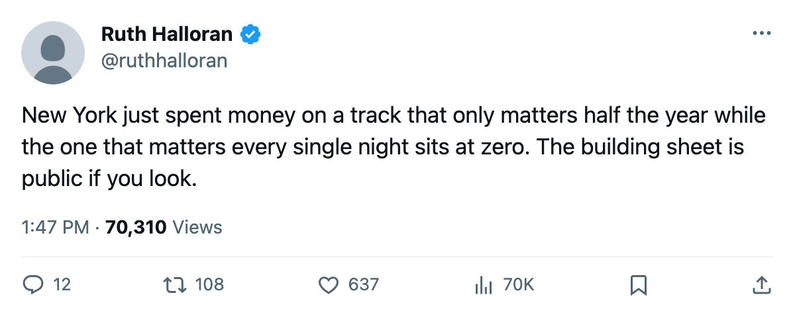

The Upgrade Report: New York raised its practice rink, and here is what moved
The Islanders go from level 2 to level 3 on a track that only bites at home. The equipment room at the floor is the one that bites everywhere.
 Ruth HalloranBusiness of hockey · The Building
Ruth HalloranBusiness of hockey · The Building
The  New York Islanders practice rink moved from level 2 to level 3 between March 30 and April 4, dropping the home penalty on every attribute from -2 to -1. The live sum goes from -13 to -12, which ties them with
New York Islanders practice rink moved from level 2 to level 3 between March 30 and April 4, dropping the home penalty on every attribute from -2 to -1. The live sum goes from -13 to -12, which ties them with  Nashville Predators for fourth in the league.
Nashville Predators for fourth in the league.
The -6 that follows them everywhere
New York carries equipment at level 0. The tuning table reads -6 at that level, and it lands on agility, acceleration, balance and shot accuracy. It applies at home and on the road, in every game, every shift. The practice track applies only at home. The travel budget, at level 3 (-1), is among the better road modifiers in the league. The workout at level 1 (-4) costs strength, checking and endurance everywhere, but equipment at the floor is the largest single penalty on the building sheet.
Twelve clubs sit at equipment level 0: New York,  Carolina Hurricanes,
Carolina Hurricanes,  Dallas Stars,
Dallas Stars,  Pittsburgh Penguins,
Pittsburgh Penguins,  Ottawa Senators,
Ottawa Senators,  Atlanta Thrashers,
Atlanta Thrashers,  Boston Bruins,
Boston Bruins,  Chicago Blackhawks,
Chicago Blackhawks,  Mighty Ducks of Anaheim,
Mighty Ducks of Anaheim,  Columbus Blue Jackets,
Columbus Blue Jackets,  Florida Panthers,
Florida Panthers,  Minnesota Wild. One club sits at level 5 and collects a +1:
Minnesota Wild. One club sits at level 5 and collects a +1:  San Jose Sharks. Nobody in this league sits at level 4.
San Jose Sharks. Nobody in this league sits at level 4.
The worst rating-model term in the league
The Bureau's facilities term, averaged over New York's own players and read from the rating model, is -3.64. That is the worst number in the league. Columbus Blue Jackets sits at -3.63, Mighty Ducks of Anaheim at -3.61. The gap between a -3.64 and a -3.61 is not a rounding error. It is a player whose acceleration grades read lower on every scouting sheet in this league.
| club | equipment | workout | practice | travel | live sum | on the ice |
|---|---|---|---|---|---|---|
| NYI | 0 (-6) | 1 (-4) | 3 (-1) | 3 (-1) | -12 | -3.64 |
| CBJ | 0 (-6) | 1 (-4) | 1 (-4) | 1 (-4) | -18 | -3.63 |
| ANA | 0 (-6) | 1 (-4) | 1 (-4) | 1 (-4) | -18 | -3.61 |
| BOS | 0 (-6) | 0 (-5) | 0 (-6) | 5 (+1) | -16 | -3.56 |
| SJ | 5 (+1) | 1 (-4) | 0 (-6) | 2 (-2) | -11 | -0.79 |
| TOR | 3 (-1) | 1 (-4) | 4 (+0) | 3 (-1) | -6 | -0.87 |
San Jose Sharks's practice rink sits at level 0, the same floor, and their on-ice term reads -0.79, the best in the league. The equipment at 5 (+1) offsets the practice deficit because practice only applies at home. Equipment applies everywhere. A single point on a track that covers all 82 nights outweighs six points on a track that covers only the home schedule.
$9.53M profit and the league's third-worst crowd
The front office filed $52.47M in payroll, $70.41M in revenue, and a $9.53M profit on the season. Attendance averaged 12943 on a $79 ticket. Only  Phoenix Coyotes at 12112 and San Jose Sharks at 12906 drew fewer. The building is profitable without a playoff run. Mark Deglau sits 21st in the league's prestige standing at 420, up 20 from the previous edition.
Phoenix Coyotes at 12112 and San Jose Sharks at 12906 drew fewer. The building is profitable without a playoff run. Mark Deglau sits 21st in the league's prestige standing at 420, up 20 from the previous edition.
New York went 23-18 at home and 17-24 on the road this season. The practice upgrade touches the first column. The travel budget already handles the second at -1. A one-point home improvement across all attributes, halved on the overall, is a modest move. The equipment deficit of -6 on four attributes across all 82 nights is not modest, and the club has not touched it.
Four tracks in the tuning table are switched off in this build: coaching, medical, marketing and legal. The locker room and scouting carry numbers that no model reads. Of the four tracks that actually move a rating, New York sits below par on all four. They just raised one of the four by a single level. The track at the floor, the one that bites in every building on the schedule, is the one left alone.
